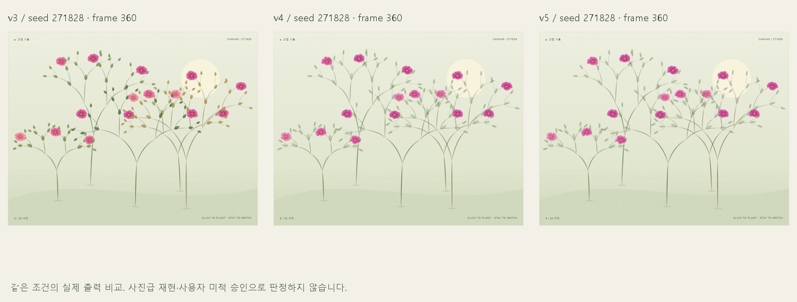

The Nature of Code · Fractals
재귀 위계와 제한된 불규칙성에서 배운다. 완벽한 대칭과 무제한 분기는 피하고, engine.js의 시드·깊이·가지 상한으로 옮겼다.
EXTENSION / FLOWERS & MARKS
꽃 3종과 브러시 5종을 독립 선택합니다. 실물·공식 샘플 관찰 → v3 최초 확장 → v4 꽃·잎 수정 → v5 브러시 수정의 실제 전후를 기록합니다.
탐색 가능한 레퍼런스 보드 ↗ · 15개 조합 관찰실 ↗ · 확장 작업 로그 ↗

A GARDEN, THROUGH ITERATION
심고, 바라보고, 다시 고칩니다.
하나의 Canvas 작품을 만드는 여덟 단계.
기준을 먼저 세우고, 실제 화면과 실행 기록으로
개선의 과정을 남깁니다.
01 / OBSERVE THE CHANGE
02 / THE WORKING METHOD
03 / IDEAS WE LEARNED FROM
재귀 위계와 제한된 불규칙성에서 배운다. 완벽한 대칭과 무제한 분기는 피하고, engine.js의 시드·깊이·가지 상한으로 옮겼다.
표시 크기와 그리기 크기를 구분한다. 늘어난 그림과 그림 속에만 있는 안내를 피하며, 초기화·리사이즈와 HTML 설명에 적용한다.
시간 기반 진행과 단일 요청 관리에서 배운다. 중첩 루프와 정지 뒤 요청을 피하는 방향으로 성장·재생 루프를 개선한다.
사용자 설정과 정적 결과를 존중한다. CSS만으로 Canvas도 멈췄다고 가정하지 않고, JavaScript 루프와 완성 장면에 확장 적용한다.
타인의 코드·이미지·페이지 구성을 가져오지 않았다. 출처는 원리의 근거이며, 이 정원의 동작을 검증한 증거는 아니다. 배울 특징·피할 특징·적용 위치 전체 보기 ↗